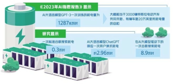
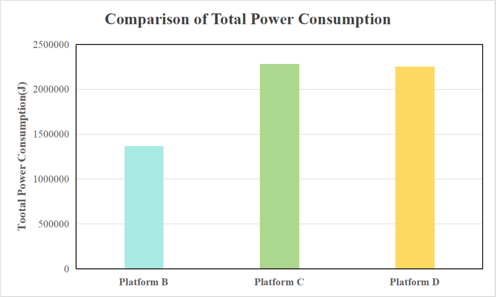
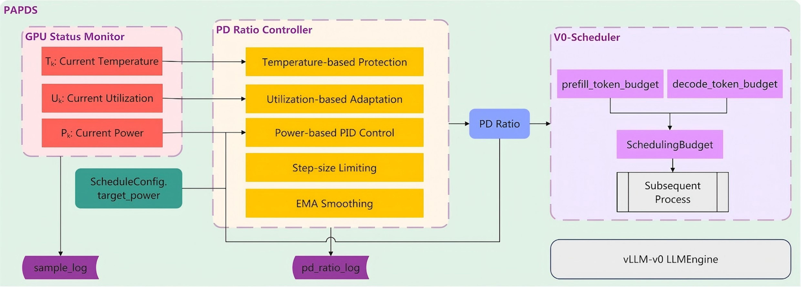
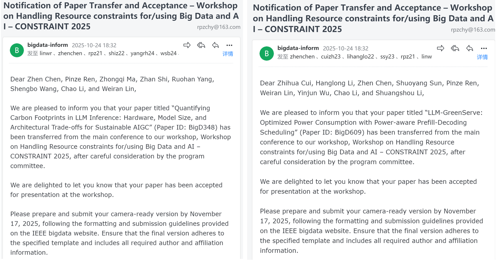
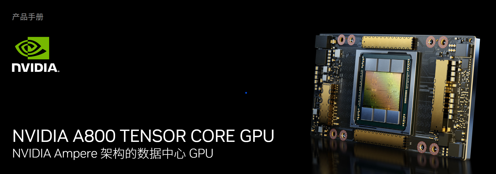

项目意义
当前，大语言模型在广泛部署与应用过程中面临的高能耗问题，已成为制约其规模化与可持续发展的关键瓶颈。 推理过程中的预填充阶段和解码阶段在计算资源消耗模式上具有显著差异， 而现有推理引擎（例如vLLM）所采用的静态或基于简单规则的调度策略，难以在动态变化的工作负载下实现能效最优。

量化大语言模型推理中的碳足迹分析
本研究系统分析了LLM推理过程中的碳排放影响因素，包括硬件配置、模型规模和架构设计等多个维度。 通过建立碳足迹量化测试流程，我们对LLM推理过程中的碳排放进行了全面分析，并提出了未来的一些优化策略。

PAPDS：一种功耗感知的动态P/D比例调度策略
通过实时采集算力设备的功耗、利用率和温度等多维度硬件指标，通过PID反馈控制动态调整推理任务的P/D任务预算分配比例，在保障模型性能的前提下，使运行时功耗尽量贴近目标功耗，以平滑功耗曲线，提升整体能效。

项目主要成员
指导教师：陈震（左上一），清华大学高级工程师（训练中心）、副研究员（信研院）
项目成员：任品泽（右上一），清华大学化工系研究生；李航龙（左下一），清华大学工程物理系研究生；崔志华（右下二），清华大学环境学院研究生
IEEE BigData2025 workshop 录用
2025 IEEE International Conference on Big Data (IEEE BigData 2025) IEEE BigData系列大会自2013年创办以来，已成为大数据领域的顶级研究会议。 其主要关注大数据研究、开发与应用的最新成果。

LLM实训平台
基于英伟达A800显卡（80G显存）的LLM实训平台，提供LLM模型训练、推理、功耗检测等， 已部署vLLM服务平台、vLLM能耗监测算法、P/D调节算法等，便于后续进一步开发。
